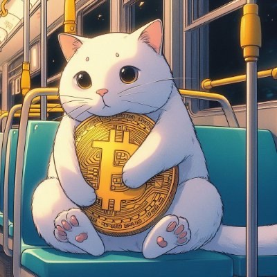

안녕하세요 가상 1인 회사 YOUNG FINANCE CEO YOUNG 입니다.
내가 가상회사의 CEO라고 생각하고 이 페이지를 만들었습니다.
단순 블로그가 아닌 내가 회사를 경영한다고 생각하고 페이지도 만들고 자료도 업데이트 하려고합니다.
투자도 결국 하나의 회사 경영이라고 생각합니다.
규모가 작고 직원이 없는 것일 뿐...
능력만 된다면 분기별 혹은 년도 별로 내가 투자한것을 정리해보려고 합니다.
그리고 투자를 할때도 그냥 투자하는것이 아니라 투자 Template을 만들어서 실패를 줄이려고합니다.
* 투자의 생각 정리 *
투자는 성주라고 생각합니다.
장기투자 종목을 통해서 성을 쌓고 성의 크기를 키우며 단기투자를 통해서 병사를 돈 주고 사서 전리품을 획득하는 방식과 같다고 생각합니다. 병사를 고용해서 전리품을 취하는데는 상대적으로 적은 시간이 걸립니다. 즉 병사를 고용은 투자금 지출이고 전리품은 수익입니다. ROI는 상대적으로 클것입니다. 그러나 리스크가 큽니다. 병사가 다 전멸할수도 있고 대부분 전멸해서 성으로 올 수도 있습니다.
그래서 상대적으로 안정적인 배당주가 가치주를 통해서 농민을 고용해서 농사를 지으려고합니다. 농부 고용은 지출 혹은 투자금이고 수확물은 수입일 것입니다.ROI는 상대적으로 작을 것입니다. 농사를 지으면 1년에 한번 3모작이면 1년에 3번 정도 밖에 수확할 수 없기 때문입니다. 즉 수확의 기간이 길고 인내의 시간이 필요합니다.
그러나 안정적으로 저에게 현금의 흐름을 가져다 줍니다. 이런 철학으로 투자를 하려고합니다.